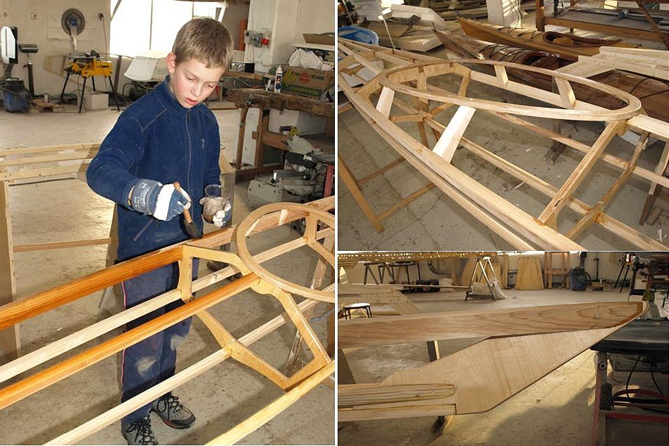

| Sea Tour 15R and Sea Pup from Iceland (IS) | Menu Last Page Next Page |
|

Eleven year old Stefan Armann Hjaltason applies varnish to his Sea Pup frame. Both kayaks are built using 12 mm birch plywood for cross sections, cedar for the stringers and birch for the coaming. The skin's are red ballistic nylon coated with clear urethane (4 layers top and 6 layers bottom and sides). They next plan to construct a Kidarka.
|
|